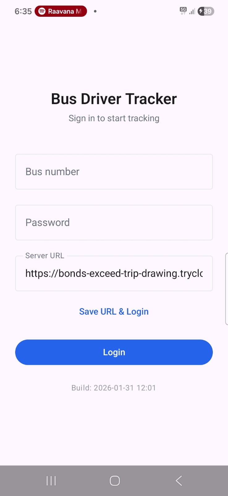
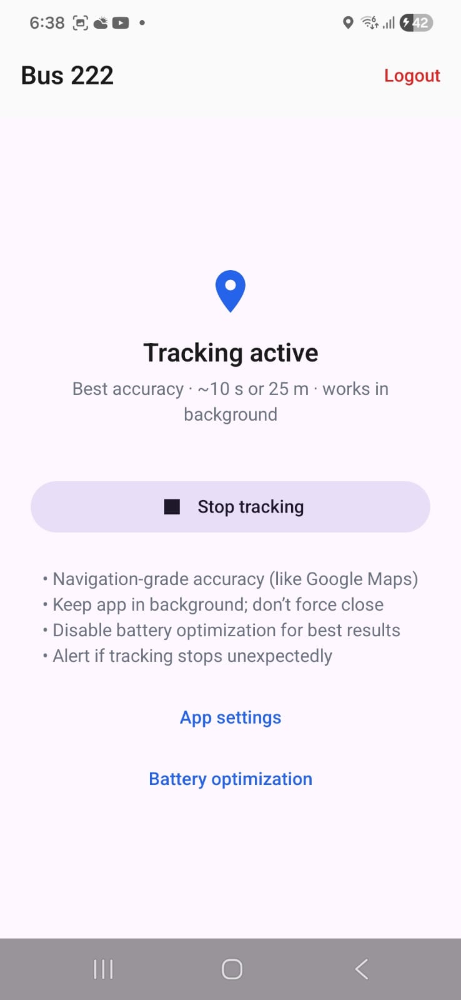

Bus Tracker — Real-Time Bus Location System
Introduction
Bus Tracker is a real-time bus location system for fleet owners and schools. It has three main parts:
- Admin Panel — Web dashboard for fleet/school staff to manage buses, routes, and stops
- Driver App — Mobile app for drivers to send live GPS to the server
- Passenger Page — Mobile-friendly webpage where passengers/parents see live bus location, ETAs, and enable "My Stop" notifications
Note: If buses already have GPS tracker devices installed (e.g. fleet tracking hardware), we can connect directly to those devices and use their location data. In that case, the driver app is not needed — the system can work with existing trackers only.
Use Cases
1. Bus Fleet Owners — Passengers track their bus via link, see when it reaches their stop, reduce "Where is the bus?" calls. Fleet owners manage buses, routes, and share tracking links with passengers.
2. School Buses — Parents see where their child's bus is in real time and get notifications when it's approaching. Reduces parent anxiety, office calls, and children waiting outside for long.
1. Admin Panel
What it does: Add/edit buses, define routes and stops (with locations), set schedules (start time, stop timings), monitor live bus status, generate tracking links to share with passengers.
Tech
Single-page HTML/CSS/JavaScript. Uses fetch for backend REST calls. Password-protected — admin enters password at login; stored in sessionStorage and sent as X-Admin-Password header on every request. Google Maps Places API (with Maps JavaScript API) for stop location autocomplete — type a place name, pick from suggestions, lat/lng filled automatically. Backend URL auto-detected from page origin; override with ?api=URL for tunnel/remote server.
2. Driver App
What it does: Driver logs in with bus number and password, taps "Start Tracking", and the app sends GPS coordinates to the server every ~10 seconds. Runs in background so driver can use the phone normally.


Tech
Native Android (Kotlin). Uses Fused Location Provider for high-accuracy GPS — updates every ~10 s or when moved 25 m. Foreground service with persistent notification so tracking continues when app is in background. Login: POST /auth/driver/login returns session_token; location sent via POST /driver/location with X-Session-Token header. Server URL configured on login screen.
3. Passenger Page
What it does: Passengers/parents open a link (shared by fleet/school) and see: live bus status, current/next stop, route timeline with ETAs for each stop, "My Stop" selection with bell icon. When they tap the bell on their stop, they get browser notifications and sound alerts: 2 stops away, 1 stop away, arrived. Selection stored in localStorage so it persists after refresh.
Screenshots taken while testing in campus.
Tech
Single-page HTML/CSS/JavaScript. Fetches bus status from GET /passenger/bus/{number} and stops from GET /passenger/bus/{number}/stops. WebSocket (/passenger/ws/bus/{number}) pushes live location and delay updates; also polls every 10 s as fallback. Haversine formula client-side computes bus position on route and ETAs from stop distances. "My Stop" notifications: Web Notifications API + Web Audio API for sound. Selection saved in localStorage. Works in any browser — no app install.
Backend
Tech: FastAPI, SQLite (SQLAlchemy ORM). REST endpoints for admin (buses, routes, stops, tracking codes), passenger (bus status, stops), driver (login, location). WebSocket broadcasts location and delay to connected passenger clients when driver sends updates. Tables: buses, routes, stops, locations, driver_sessions, delay_info, stop_arrivals, tracking_codes. CORS enabled. Serves admin and passenger UIs from /ui (docs folder).